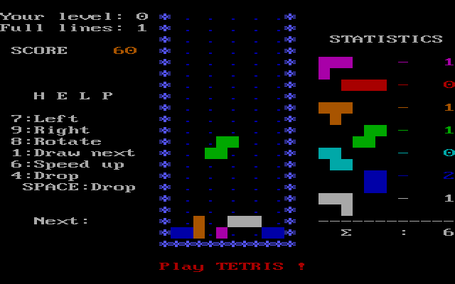

Narrative in video games
Paradoxically, game theorists love stories for the reasons ludologists renounce them. According to ludologists, games and stories belong to different categories, because, as Juul argues and Aarseth concurs, the plot of a story cannot be extracted from a game based on that story, while in the inverse translation from game to story the rules of the game get lost (Juul, 2001; Aarseth, 2004). Aarseth concludes: “So, although non-narrative and non-ludic elements can be translated [setting, atmosphere and characters], the key elements, the narration and the gameplay, like oil and water, are not easily mixed” (Aarseth, 2004).
Academic studies of video games have largely spent their time arguing about how video games should be studied. One of the points of controversy is in the relationships between video games and narrative.
The academic aproach to studying games is divided between different groups and philosophies:
- ludogology - study of games - focus on gameplay
- games studies - focus more on anthropological and sociological aspect of video games and culture
- narratology - applying literary theory to study of interactive media
There is a tendency to discuss the narrative component of games as part of a continuum between games that are highly narrative, such as Final Fantasy and games that have very little narrative, such as Tetris
Ludologists see narrative and games as completely separate things, occasionally existing in the space space.
"There's a conflict between interactivity and storytelling: Most people imagine there's a spectrum between conventional written stories on one side and total interactivity on the other. But I believe that what you really have are two safe havens separated by a pit of hell that can absorb endless amounts of time, skill, and resources."
Walter Freitag, game designer.
As game designers, we might not care about the academic arguments regarding narrative and games, but considering them can help us understand how narrative and video games can coexist (or not).
It can be difficult to parse, but the primary difference between games and narrative is the treatment of time and sequence. Games are usually non-linear and dependent on the interaction of a user. Narratives tend to have a fixed sequence of event that shape the reader or viewer's experience of the story.
Some aspects of narrative are shared by games, such as character, setting and premise. These elements are part of a narrative, but narratives also include sequences.
Let's review some basics of narrative before looking at how it works in games.
The classical view of narrative uses a five act structure:
Modern forms of narrative adhere to a three act structure that is fairly similar:

http://www.openculture.com/2014/02/kurt-vonnegut-masters-thesis-rejected-by-u-chicago.html
In this video, Kurt Vonnegut demonstrates how the shapes of stories are usually pretty simple.
These are basic guidelines. Throughout history we have seen much more complicated narratives.
Interactive narratives predate digital technology, but are much more widespread in modern media like video games and the Internet. Interactive narratives tend to fall into four basic structures:
- linear - the plot arc is always the same and the user advances the story through each node or plot point
- branching - each plot node presents multiple paths to continue
- web - there are no specific paths but a web of nodes with various connections
- generated - some stories rely on artificial intelligence or generated content - these tend to be more experimental
That brings us back to video games. How are narratives introduced into video games?
Narrative discriptors:
- Instructional text
- Cut scenes
- Visual/audio elements
- Interface elements
- Gameplay mechanics
The goal of many game designers is to build the story into their game mechanics, but this isn't always easy to do. Video games make use of both embedded and emergent narrative components to tell a story.
Embedded narrative is content that has been created by the game designed that is arranged to tell a story, including cut scenes, voiceover narration, textual elements in the game and visual design.
Emergent narrative comes out of the users interaction with the game world. The amount of emergent narrative can depend on how much the general narrative can accomodate decisions and inputs of the user.
Narrative framing is a powerful aspect of game design. Most games, no matter how simple, have a narrative frame, which includes elements like the premise, setting or characters of a game.

Just from the simple graphics of space invaders, the player can deduce a framing narrative.
However, than can be danger in interpreting or assuming too much about a game interface or interaction. The critic Janet Murray was criticized by many in the video games studies field for her analysis of Tetris as "a perfect enactment of the over tasked lives of Americans in the 1990s - of the constant bombardment of tasks that demand our attention and that we must somehow fit into our overcrowded schedules and clear off our desks in order to make room for the next onslaught."
This has been criticized as a subjective observation that tells us very little about the gameplay of Tetris.
The example of Tetris points out an aspect of games and narratives that is very hard to reconcile, which is timing and pacing.
Traditional narratives rely on the user's undrestanding of the difference between discursive time, or the time it takes to tell a story, and story time, or the time of the events in the story.
Video games narratives necessarily have a discursive time that cannot controlled by the storyteller or game designer, and thus the user and the designer work together to create the pace and discursive time of a story. The time it takes a user to explore, achive goals and overcome challenges factors greatly into the designers ability to tell a story with a traditional structure.
The challenge of a game designer is to create a system which allows the player to follow the pace of the intended game and story.